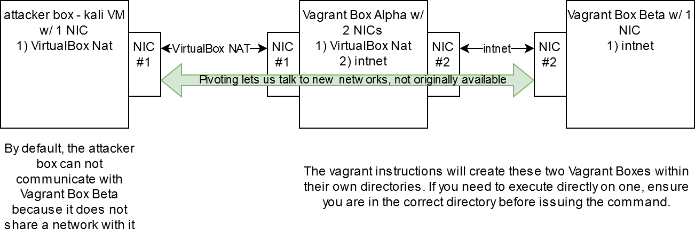

Pivoting Lab Setup
1. Home Lab Setup
This setup is meant to compliment a pivoting techniques session at DC864, but seemed to be comprehensive enough to be worth publishing by itself.

1.1. Install & Pre-Req Setup
- Install VirtualBox
- Install Vagrant
- Possibly need to add
C:\Hashicorp\Vagrant\binto windows env path- And be sure to have other path variables set
- Create a directory named
sharedin your home folder - Copy your
id_rsa.pubfrom attacker box to theshareddirectory - Review diagram above for box naming
1.2. Creating Alpha Box
- Create directory for the alpha box
- my example was
mkdir ~/alpha
- my example was
vagrant box add [link to vagrant cloud]- Vagrant cloud- We are using ubuntu/focal64 so the above command would be
vagrant box add ubuntu/focal64
- We are using ubuntu/focal64 so the above command would be
vagrant init ubuntu/focal64within the alpha box directory you created in step 6- configure
Vagrantfileto the below source code- I'm using emacs but feel free to use notepad, vscode, or whatever text editor
- yours will probably have a lot more comments then mine, feel free to just use the code below and delete all the comments
vagrant up- we should be able to see it running now
- also, we need to know provision it to be a box worthy of lab running
Vagrant.configure("2") do |config|
config.vm.box = "ubuntu/focal64"
# change the ~/shared/ if you changed the location or name of your shared dir in step 4
config.vm.synced_folder "~/shared/", "/home/vagrant/shared"
# this creates our two NICs in the diagram linked in step 6
config.vm.network "private_network", ip: "192.168.100.12"
config.vm.network "private_network", ip: "172.16.100.12", virtualbox__intnet: true
# change id_rsa.pub if you changed the name of it when copying in step 5
config.vm.provision "shell", inline: <<-SHELL
cat /home/vagrant/shared/id_rsa.pub >> /home/vagrant/.ssh/authorized_keys
SHELL
end
1.3. Create Beta Box
- Now we are creating a new directory (not within the alpha directory) called
beta, I put mine in the~/home directory vagrant init ubuntu/focal64this will redownload, there is a way to link boxes/images but this is the most straightforward for now- Configured the
Vagrantfileto the below source vagrant up
Vagrant.configure("2") do |config|
config.vm.box = "ubuntu/focal64"
# change the ~/shared/ if you changed the location or name of your shared dir in step 4
config.vm.synced_folder "~/shared/", "/home/vagrant/shared"
# this creates our one NICs in the diagram linked in step 6
config.vm.network "private_network", ip: "172.16.100.13", virtualbox__intnet: true
# change id_rsa.pub if you changed the name of it when copying in step 5
config.vm.provision "shell", inline: <<-SHELL
cat /home/vagrant/shared/id_rsa.pub >> /home/vagrant/.ssh/authorized_keys
SHELL
end
1.4. Test Lab Setup
- And now, we can begin testing with our kali box if everything is setup
- from the kali box,
ping -c 3 192.168.100.12and should be able to reach the box with ICMP received response - from the kali box,
ping -c 3 172.16.100.12and should have output "Destination Host Unreachable" - from within the alpha box directory,
vagrant ssh ping -c 3 172.16.100.13and should be able to reach the box with ICMP received response- type
exitin the vagrant ssh session - from within the beta box directory,
vagrant ssh ping -c 3 172.16.100.12and should be able to reach the box with ICMP received responseping -c 3 192.168.100.12and should have output "Destination Host Unreachable"
2. Final Notes
- Vagrant's documentation on VirtualBox
- Do not manage these created by vagrant from your virtualbox interface
- to shutdown the boxes, run
vagrant haltwithin the directory the VM is located - And please ask questions, follow along with the pivoting technique overview, and have fun!